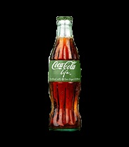

| Product Name | Product Information | Product Image |
|---|---|---|
| COCA-COLA | Coca-Cola is the most popular and biggest-selling soft drink in history, as well as one of the most recognizable brands in the world. Created in 1886 in Atlanta, Georgia, by Dr. John S. Pemberton, Coca-Cola was first offered as a fountain beverage at Jacob's Pharmacy by mixing Coca-Colasyrup with carbonated water. Coca-Cola was patented in 1887, registered as a trademark in 1893 and by 1895 it was being sold in every state and territory in the United States. In 1899, The Coca-Cola Company began franchised bottling operations in the United States and in 1906 bottling operations for Coca-Cola began to expand internationally. | |
| DIET COKE | Diet Coke, also known as Coca-Cola light in some markets, is a sugar- and calorie-free soft drink. It was first introduced in the United States on August 9, 1982, as the first new brand since 1886 to use the Coca-Cola Trademark. Today, Diet Coke/Coca-Cola light is one of the largest and most successful brands of The Coca-Cola Company, available in more than 150 markets around the world. | |
| COCA-COLA ZERO | Coke Zero was Coca-Cola's largest product launch in 22 years and launched in 2005, reaching billion-dollar status in 2007. Coca-Cola Zero offers great Coke taste, uplifting refreshment and zero sugar. | |
| COCA-COLA LIFE | Coca-Cola Life is a reduced-calorie cola sweetened with cane sugar and stevia leaf extract. At 60 calories per 8-oz. glass bottle, Coca-Cola Life has 35 percent fewer calories than other leading colas*. Stevia, a sweetener with zero calories, is obtained from the leaf of the stevia plant. Together with cane sugar, stevia leaf extract gives Coca-Cola Life its delicious, sweet flavor. Coca-Cola Life is the perfect refreshing beverage to enjoy throughout summer’s sweetest moments and pairs well with some of your favorite seasonal dishes. |  |
| COCA-COLA LIGHT | Diet Coke, also known as Coca-Cola light, is a sugar- and calorie-free soft drink with a deliciously crisp taste that gives you a light boost in your busy day. It was first introduced in the United States on August 9, 1982, as the first new brand since 1886 to use the Coca-Cola Trademark. The brand created an entire new category and a new way of life. Today, Diet Coke/Coca-Cola light is one of the largest and most successful brands of The Coca-Cola Company, available in over 150 markets around the world. |
Contact us...